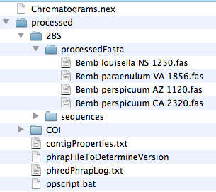
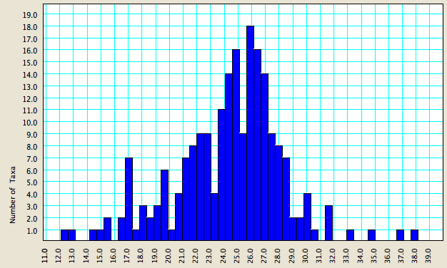
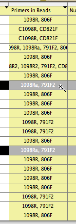
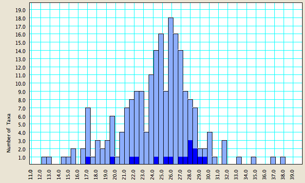

Many features of the basic Mesquite packages are useful in the context of Chromaseq. We here give a few examples that we have found useful.
Importing initial sequences into another matrix
If you wish to quickly add sequences produced by Phred/Phrap/Chromaseq system to a existing, preliminary matrix, you can find the initial sequences in FASTA format in the processed subdirectory. The FASTA files will be in the processedFasta directory within each fragment's directory. For example, in the Chromatograms example used in the Tutorial, the processedFasta directory within 28S contains four FASTA sequences of 28S ribosomal DNA.

To move these into a Mesquite matrix, have that matrix open and visible within Mesquite. Then, select the FASTA files, and drag and drop them onto the matrix. Mesquite will ask you for the file format (chose FASTA), and Mesquite will then add each of the sequences to the matrix.
Note that these sequences are the initial, unedited sequences produces by Phred/Phrap/Chromaseq. If you have made base calls, trimmed the sequences, or done any other editing, these revised versions will not be in these FASTA files, but will instead be in the main Mesquite file that was produced by Chromaseq.
Alignment tools
Alignment tools can aid in interpreting the sequences, and in making base calls. Among the relevant alignment tools are:
- manual alignment tools,including the Pairwise aligner tool in the matrix, and the Matrix>Alter/Transform>Shift Other to Match command, as outlined in the Align package manual. To see the Align package manual, choose Help>Align Package from within Mesquite.
- automated alignment tools, including Opal. See the Opalescent web page for details about acquiring Opal for Mesquite.
Reverse-complementing sequences
If a sequence is reverse-complemented relative to the majority of sequences in the file, it can be difficult to compare it to other sequences. If you wish, you can select the sequence in the main matrix, and choose Matrix>Alter/Transform>Reverse Complement. If you do this, the Chromatogram Viewer window will change to have orange-colored panels, indicating that this sequence is has been reverse complemented.
Charts
The charting tools in Mesquite can be useful with Chromaseq. For example, after doing some Chromaseq processing, imagine you wished to plot the variation in average quality score of your sequences. You can do this by choosing Analysis>New Bar & Line Chart For>Taxa, and in the dialog box that comes up which asks you to choose the Value to Calculate for Taxa, choose "Quality Score". Here's an example chart of this sort:

As you can see, for these data, most sequences have an average per-base quality score between 21 and 29.
Let's imagine, though, that you wanted to see which of your primer pairs yielded the highest quality sequences. If you go to the List of Taxa, and choose Columns>Primers In Reads, you will get a new column in the List of Taxa that shows the primers that are present in the chromatogram names. If you then use the magic wand tool and touch on one particular combination of primers, for example the primer pair 1089a, 791F2, then all sequences with that primer pair will be selected:

If you then look back at your chart, you will see that the sequences based upon that primer pair will be highlighted:

This can be a useful tool to decide the primer pair that gives the highest quality sequences.